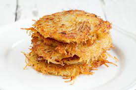

Hashbrowns

Hashbrowns.
Ingredients
- Potatoes
- Salt
- Butter
- Tabsco (optional but highly recommended)
LETS COOK
- Find some nice Yukon Potatoes
- Grate the potatoes up (the more fine the better)
- Squeeze out the moisture and make those potatoes dry
- Cook the hasbrowns at a medium-high heat with the butter already melted on the pan before adding the potatoes
- Flip and complete until they are a golden BROWN